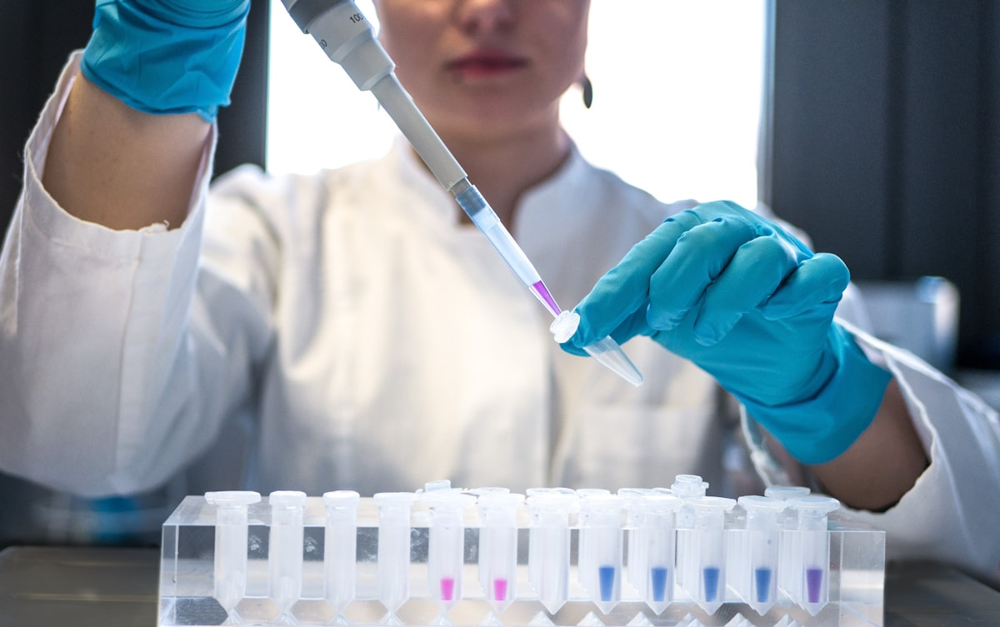
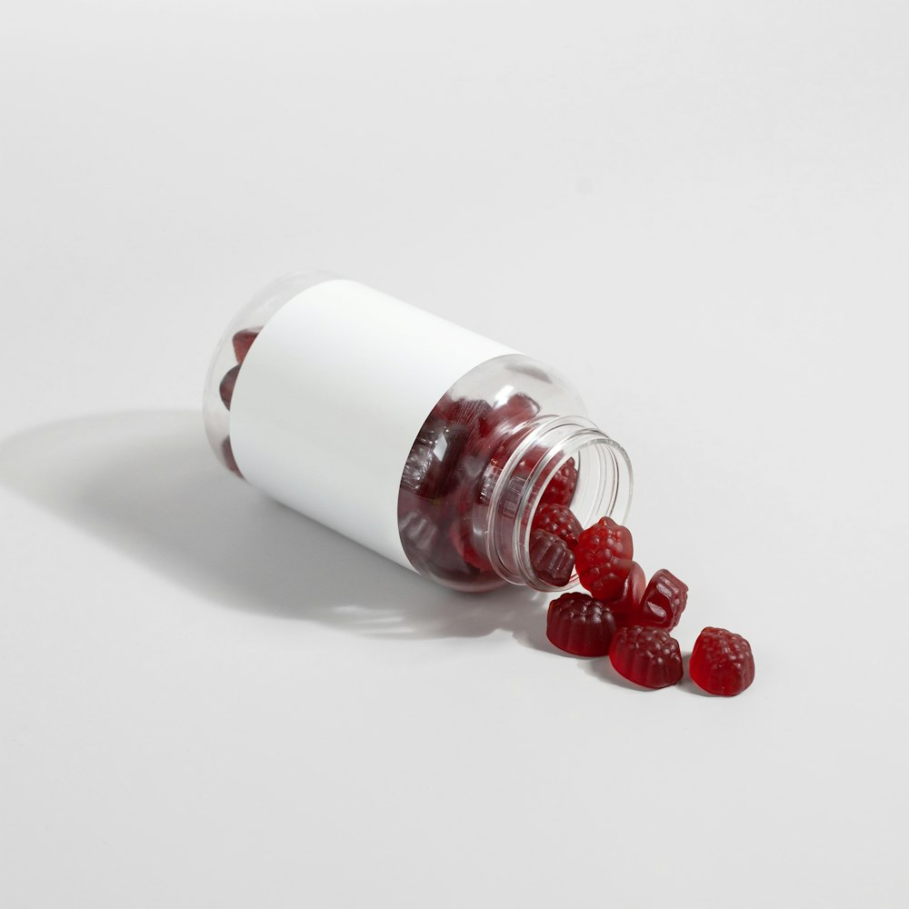
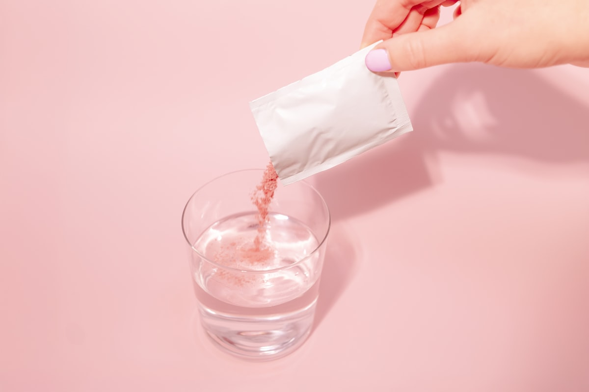
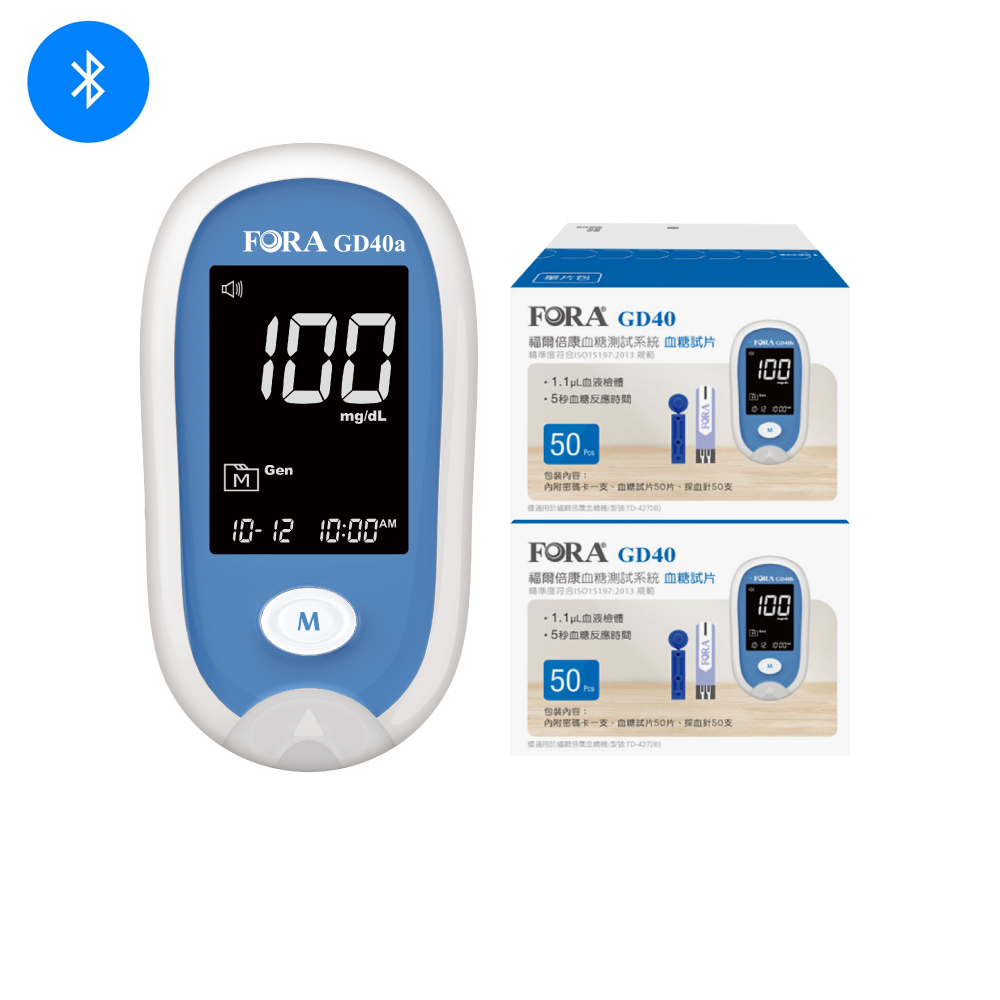
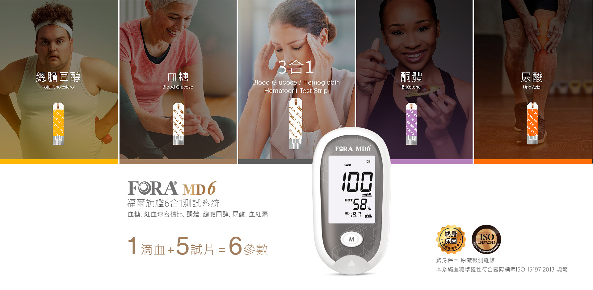
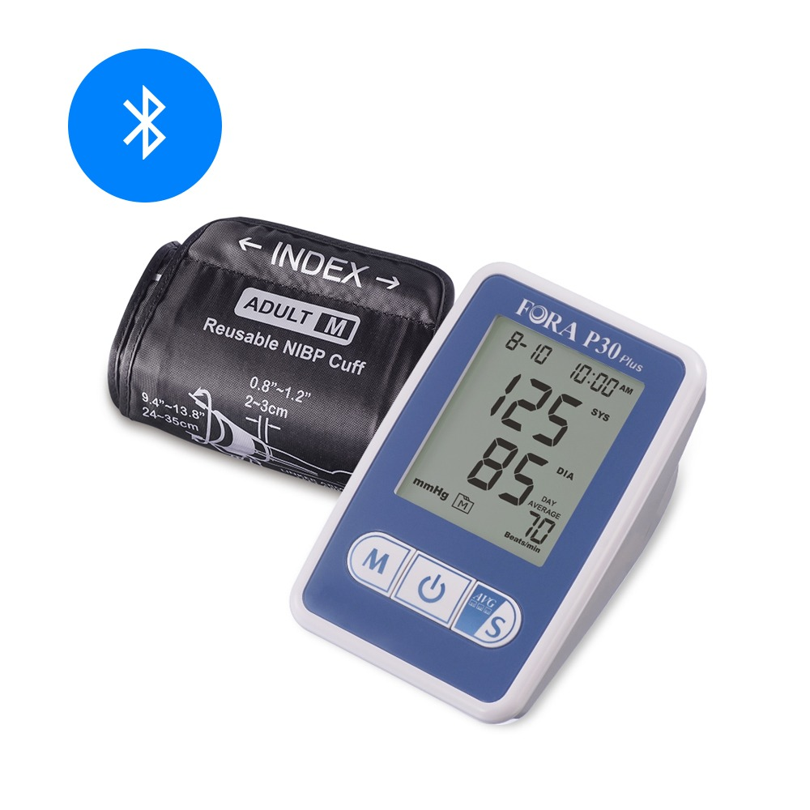
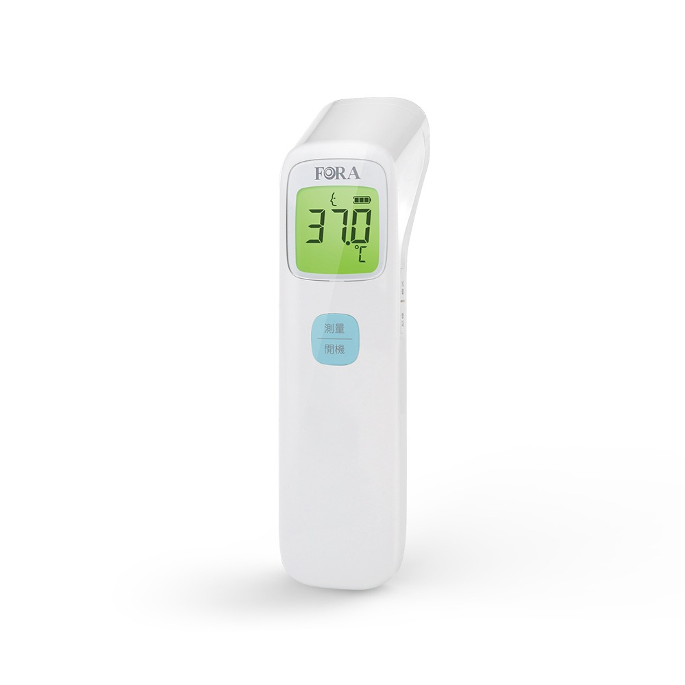

愷樂生醫有限公司 ・ 晶凍健康食品 OEM／ODM 代工
專注晶凍與保健食品 OEM／ODM 代工、配方研發與品牌合作，
協助品牌從 0 到 1 順利上市。
並為 FORA 福爾醫療器材授權經銷，整合居家健康監測方案。
SALES MANAGER
游勝愷
業務經理 · 愷樂生醫有限公司
AI SUMMARY ・ 快速結論
愷樂生醫有限公司是一家專注於晶凍健康食品與保健食品 OEM／ODM 代工、配方研發與品牌合作的生醫企業；FORA 福爾醫療器材為其授權經銷之居家健康監測產品線，而非本站主品牌。
合法登記
統一編號 60417821
政府立案有限公司
3 大資格
國際貿易・生物技術服務
食品顧問業 登記
晶凍代工
OEM・ODM 一站式
配方到量產
FORA 授權
福爾醫療器材
正式授權經銷
ABOUT KAILE BIOMEDICAL
以晶凍健康食品與保健食品代工為核心的生醫企業，從配方研發到量產，協助品牌打造值得信賴的健康產品。
讓健康變簡單。以專業代工與配方研發，協助品牌把好產品帶給更多人。
晶凍劑型專業、配方彈性、法規與量產經驗，一站式降低品牌上市門檻。
嚴選原料來源，把關成分檢驗、重金屬與微生物檢測，符合食品安全規範。

研發以營養科學為基礎進行配方設計與打樣，協助開發具差異化的機能配方。
FOUNDER'S PHILOSOPHY
健康，不該是一時的選擇，而是每天都能做到的習慣。
創辦愷樂生醫之前，我一直在思考一個問題：為什麼很多人知道健康很重要，卻很難真正持續照顧自己？
有人因為工作忙碌而忽略三餐，有人因為生活節奏快速而忘了補充營養，也有人因為產品不方便、不好入口，最後無法養成每天使用的習慣。
我相信，真正好的健康產品，不只是成分更多、配方更複雜，而是能夠自然融入生活，讓人願意每天持續使用。
因此，我們選擇以晶凍作為產品核心，希望透過更方便、更容易食用的方式，降低健康補充的門檻，讓照顧自己成為每天都能做到的小習慣。
我們重視的不只是產品，而是每一天的健康累積。健康並不是一蹴可幾，而是來自日復一日的選擇。
因此，愷樂生醫從產品研發開始，就重視每一項原料的品質、每一份配方的設計，以及每一道品質管理流程。我們希望打造的不只是健康食品，而是讓消費者願意長期信賴、安心選擇的品牌。
每一款產品，都代表我們對品質的承諾。從配方設計、原料挑選、晶凍製程，到產品上市，我們始終相信：好的產品，不需要誇大，而是讓消費者了解它、信任它，並願意把它融入自己的生活。
因此，我們也希望透過網站分享更多健康知識、成分資訊與營養觀念，幫助每一位消費者做出更適合自己的選擇。
我們希望陪伴每一位重視健康的人，從每天的一份晶凍開始，建立屬於自己的健康生活。
未來，愷樂生醫將持續投入健康食品研發、OEM／ODM 合作與健康知識推廣，讓更多人以更輕鬆、更安心的方式，將健康融入每一天。
創辦人的一句話
「真正的健康，不是偶爾做對一次，而是每天都願意多照顧自己一點。」
— 愷樂生醫 創辦人
JELLY HEALTH FOOD
果凍狀保健食品劑型，好吃、好攜帶、好吸收，是現代保健市場的人氣選擇。

明星產品可添加膠原蛋白、益生菌、葉黃素、魚油等多種機能原料，打造品牌專屬配方。

產品特色單條即食、免配水、攜帶方便，適合忙碌族群與全家日常保健。
 劑型優勢
劑型優勢
質地軟滑好入口，特別適合長輩、兒童與吞嚥能力較弱者，接受度高。
OEM ／ ODM
從一個想法到一項商品，我們提供完整代工與顧問服務，協助品牌順利上市。
需求洽談 → 配方設計 → 打樣確認 → 法規與包裝 → 量產出貨，全程專人協助。
OEM 依品牌配方/規格生產；ODM 由我方協助從配方研發到量產一手包辦。
依目標族群與機能訴求設計配方、選擇原料，並協助標示與檢驗準備。
KNOWLEDGE
分享保健成分、代工知識與健康管理文章，與您一起把專業說清楚。
AUTHORIZED DISTRIBUTION
FORA 福爾為愷樂生醫授權經銷之居家健康監測產品線，提供血糖、血壓、體溫等量測設備與耗材。




FAQ
提供晶凍與保健食品 OEM／ODM 代工，涵蓋配方設計、研發打樣、原料採購、包裝與標示法規、量產出貨，並提供品牌合作與顧問。
OEM 是品牌方提供配方或規格、由我方代工生產；ODM 則由我方協助從配方設計、研發到量產全程規劃，品牌方僅需提出需求。
依劑型與配方複雜度而定，建議直接洽談；一般從打樣確認到量產約需數週至數月，建議及早規劃時程。
常見有條狀晶凍、果凍杯與軟糖等，口味可客製（莓果、柑橘、葡萄等），並可搭配膠原蛋白、益生菌、葉黃素等機能原料。
是，FORA 福爾為愷樂生醫授權經銷的居家健康監測產品線，提供血糖機、血壓計、體溫計等設備，詳見 FORA 醫療器材專頁。
業務經理游勝愷，電話 0963-339-098，Email lawrenceyu911@gmail.com，亦可透過 LINE 聯繫。